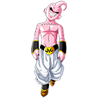

Fiel a su raza, Goku posee un espíritu combativo sumamente marcado, y es incapaz de
resistirse a pelear con alguien que le parezca fuerte aun en los momentos más inoportunos.
Es extremadamente competitivo y entrena constantemente, ya que nunca está satisfecho
con su fuerza actual y siempre busca ir más allá.
*Kamehameha
*Kaioken
*Genkidama
| VEGETA | Descripcion | Tecnicas |
|---|---|---|

|
Vegeta es el príncipe de una raza guerrera extraterrestre conocida como los Saiyajin. Es extremadamente arrogante, orgulloso y trabajador; constantemente se refiere a su herencia y estatus real a lo largo de la serie. |
*Galic Gun *Big Bang Atack *Final flash |
| PICCOLO | Descripcion | Tecnicas |
|---|---|---|
|
Es un namekiano que surgió tras ser creado en los últimos momentos de vida de su padre, siendo su actual reencarnación. Aunque en un principio fue el archienemigo de Son Goku, con el paso del tiempo fue haciéndose menos malvado hasta finalmente convertirse en un ser bondadoso y miembro de los Guerreros Z. |
*Bakurikimaha *Makankosappo *Ataque Místico |
| BROLY | Descripcion | Tecnicas |
|---|---|---|

|
Broly es un Saiyajin que posee un poder gigantesco e incontrolable, el cual se manifiesta en toda su magnitud cuando se convierte en el Super Saiyajin Legendario Incluso cuando apenas era un bebé su nivel de poder alcanzaba cifras inmensas que provocaban asombro y preocupación entre los de su raza. |
*Géiser Borrador. *Cañón Borrador Doble *Omega Bláster |
| FREEZER | Descripcion | Tecnicas |
|---|---|---|

|
Freeza (フリーザ, Furīza), conocido también como Freezer, es un alienígena mutante, brutal dictador y líder del Imperio Galáctico del Universo 7 con el apoyo estratégico en secreto de su padre Cold. En las películas también lidera este imperio su hermano mayor Cooler. |
*Kienzan *Hell's Buster *Rayo Mortal del Emperador |
| CELL | Descripcion | Tecnicas |
|---|---|---|

|
Cell (セル, Seru), conocido como Célula en España, es un bioandroide creado por la computadora del Dr. Gero, quien vino del futuro de la línea 3 con la intención de vengarse de Goku por haber acabado con el Ejército del Listón Rojo, y con ello el sueño de todo villano: dominar el mundo. Es el antagonista principal del Arco de los Androides y Cell. |
*Kamehameha *Taiyoken *Death Beam |
| MAJIN BUU | Descripcion | Tecnicas |
|---|---|---|
|  |
Pequeño Boo (魔人ブウ (純粋), Majin Bū (Junsui)), también conocido como Boo original, es la forma original y pura de Majin Boo, y la última forma de Boo que aparece en Dragon Ball Z. |
*Absorción *Regeneración *Explosión Planetaria |